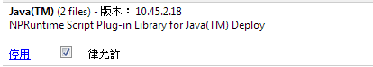
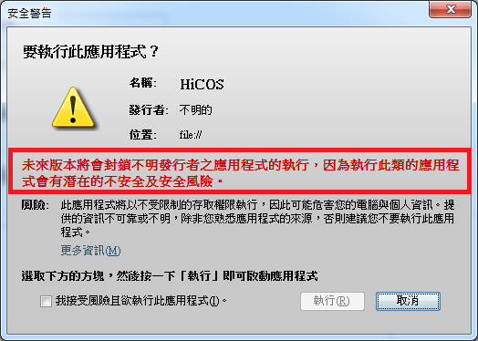
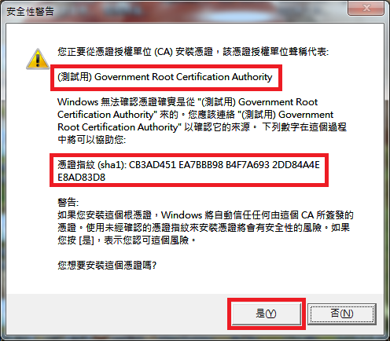
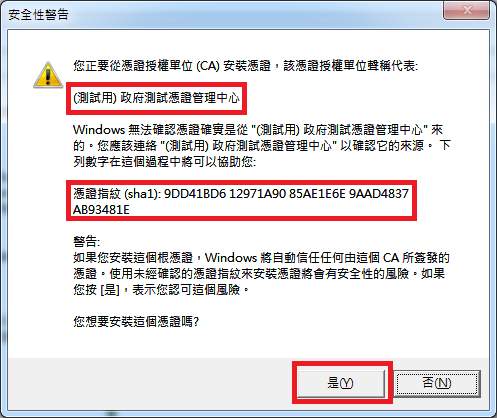
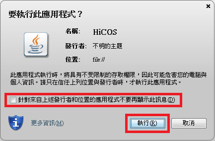
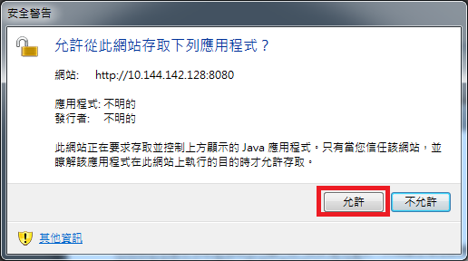

憑證登入元件環境檢測說明(v0.0.1，2013/12/20)
初次使用本系統憑證登入功能請先確認下列元件已安裝且正確設定
如果未安裝或未正確設定將無法正常執行憑證登入功能
l
是否已安裝Java應用程式
n
最低版本需求: 32位元Java Version
6 (JRE 1.6)以上版本
n
若您尚未安裝Java
若檢測結果為舊版的Java，您可以依照手動解除安裝適用於 Windows 的
Java 頁面上的指示，安全地解除安裝系統中的舊版 Java
n
若您已經安裝Java
l
是否已安裝HiCOS卡片管理工具
n
最低版本需求: 2.1.8
n
若您尚未安裝HiCOS卡片管理工具
請下載HiCOS卡片管理工具並依頁面上安裝手冊的說明完成安裝
n
若您已經安裝HiCOS卡片管理工具
執行HiCOS用戶端系統環境檢測工具，測試HiCOS卡片管理工具在我的電腦上是否運作正常。執行路徑為C:\Program Files\Chunghwa Telecom\HiCOS PKI Smart Card\HiCOS_Inspector.exe或C:\Program Files\Chunghwa Telecom\HiCOS
PKI Smart Card\HiCOS_Inspector_x64.exe，如找不到該路徑表示HiCOS卡片管理工具未完成安裝。
l
調整瀏覽器相關設定
n
支援的瀏覽器: Chrome
n
若您尚未安裝Chrome瀏覽器
n
若您已經安裝Chrome瀏覽器，請允許本系統執行Java外掛程式
安裝完Java後，瀏覽器預設允許使用Java外掛程式，不過，由於外掛程式有時會帶來安全性風險，因此Chrome會封鎖過舊的外掛程式或較少見的外掛程式，若您的瀏覽器安裝完Java後測試Java在我的電腦上是否運作正常卻無法正常執行Java，您可新增例外狀況，藉此變更瀏覽器對個別網站或網域設定的處理行為，設定方式如下:
1.
開啟Chrome瀏覽器，在搜尋欄位輸入 about:plugins。
2.
掃描 Java 並確認是否已啟用
Java (若顯示「停用」連結，則表示 Java 已啟用)，如找不到表示您的電腦尚未安裝Java，請下載及安裝Java。
3.
按一下[啟用]連結 (如果有的話)。
4.
(選擇性) 勾選[一律允許]方塊，即可在執行 Java
內容時停止其他 Chrome 警告。參考畫面如下。

5.
重新整理網頁，完成。
l
是否已安裝中華電信憑證登入元件簽屬者憑證
n
若您尚未安裝中華電信憑證登入元件簽屬者憑證，進入憑證登入頁面時會出現黃色的警告三角形

請下載中華電信簽屬者憑證匯入元件，下載完後執行該檔案安裝中華電信憑證登入元件簽屬者憑證。執行過程中總共會安裝2張憑證，憑證安裝畫面如下:


n
若您已安裝中華電信憑證登入元件簽屬者憑證，進入憑證登入頁面時會出現Java標誌或發行者標誌，代表該應用程式已透過來自中華電信受信任憑證授權單位(CA)之有效憑證識別的應用程式，請將[針對來自上述發行者和位置的應用程式不要再顯示此訊息]打勾後按[執行]。

l
登入系統注意事項
若您登入系統後出現此網站存取下列應用程式的安全警告，請點選[允許]
